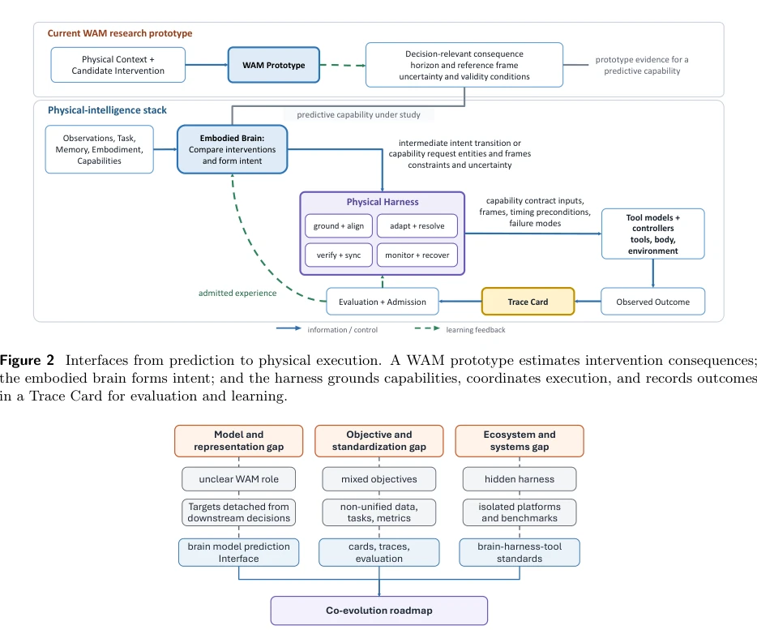
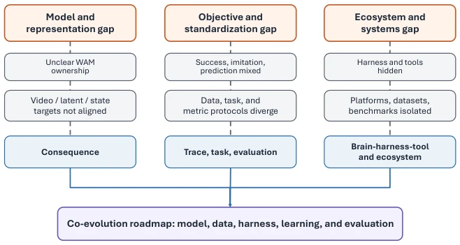
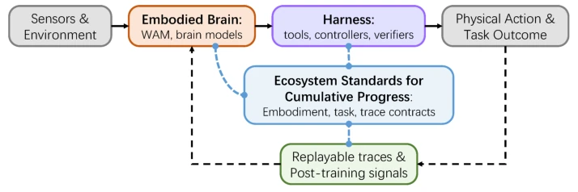
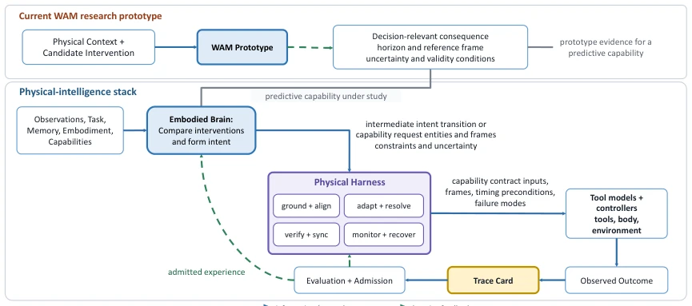
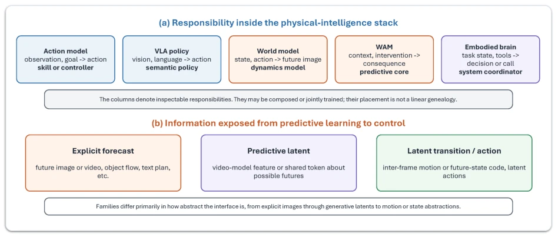
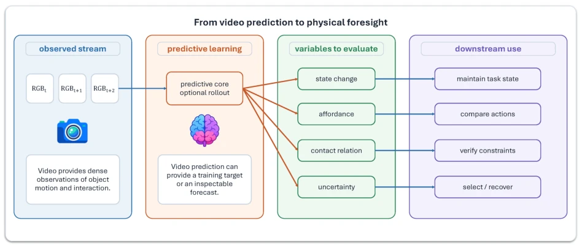
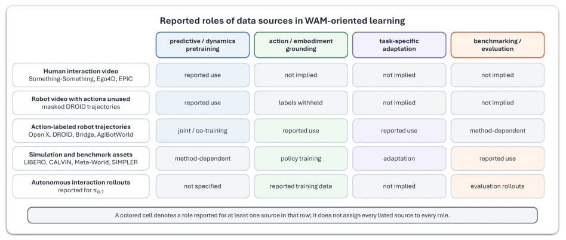
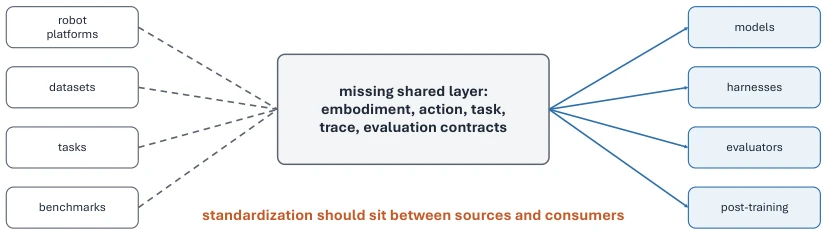
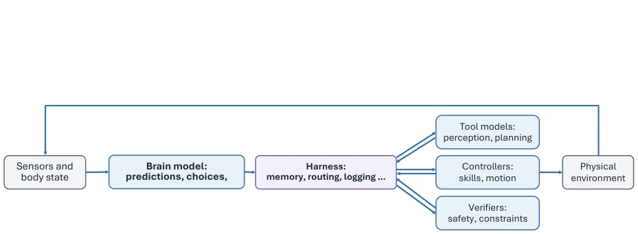
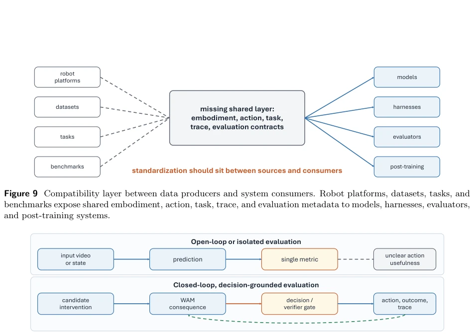

From World Action Models to Embodied Brains: A Roadmap for Open-World Physical Intelligence
Yuanzhi Liang, Xufeng Zhan, Haibin Huang, Chi Zhang, Xuelong Li abspdf
论文点评Review
这篇论文与其说是技术突破，不如说是给混乱的具身智能圈泼了一盆冷水。作者敏锐地指出，当前 WAM 和 VLA 研究虽然热闹，但接口不统一、语义隐藏，导致经验无法积累。他们提出的“具身大脑”概念听起来很性感，试图把推理和执行解耦，但这更像是一个理想化的架构蓝图，而非即插即用的解决方案。吐槽点在于：这玩意儿落地了吗？没有。它更多是呼吁社区建立“合同”和“标准”，而不是直接甩出一个 SOTA 模型。优点在于视角清晰，把“预测”和“执行”分开了，但缺点也很明显：理论先行，实证滞后，对于急需解决具体任务落地的工程师来说，可能有点“远水解不了近渴”。不过，作为路线图，它确实指出了当前“堆参数”无法解决“接口语义”问题的核心矛盾，值得深思。
This paper is less of a technical breakthrough and more like a cold shower poured on the chaotic embodied AI community. The authors keenly point out that while current WAM and VLA research is lively, the lack of unified interfaces and hidden semantics prevents experience accumulation. The "Embodied Brain" concept they propose sounds appealing, attempting to decouple reasoning and execution, but this is more like an idealized architectural blueprint rather than a plug-and-play solution. The critique point is: Has this thing been deployed? No. It is more of a call for the community to establish "contracts" and "standards" rather than directly throwing out a SOTA model. The advantage lies in the clear perspective, separating "prediction" and "execution", but the disadvantages are also obvious: theory first, empirical lag; for engineers urgently needing to solve specific task deployment, it might be "distant water cannot quench immediate thirst". However, as a roadmap, it indeed points out the core contradiction that current "parameter stacking" cannot solve the "interface semantics" problem, worthy of deep thought.
研究动机Motivation
具身智能的核心痛点在于“经验无法复用”。现有系统如 Open X-Embodiment (Open X-Embodiment Collaboration et al., 2023) 虽然聚合了数据，但动作空间和控制约定仍不兼容。VLA 模型 (Brohan et al., 2022, 2023) 直接输出动作，隐藏了物理后果的预测过程，导致难以验证和调试。世界模型 (LeCun, 2022) 强调预测，但缺乏与决策的显式契约。作者认为，单纯堆参数或轨迹无法解决接口语义隐藏的问题，导致系统难以跨任务、跨形态迁移。此外，评估标准混乱，如 RoboWM-Bench (Jiang et al., 2026) 所示，像素重建不等于物理一致性。因此，需要建立统一的预测契约和评估标准，让物理智能从“黑盒”走向“可解释、可积累”，实现真正的开放世界智能。
The core pain point of embodied intelligence lies in "experience cannot be reused". Existing systems like Open X-Embodiment (Open X-Embodiment Collaboration et al., 2023) aggregate data, but action spaces and control conventions remain incompatible. VLA models (Brohan et al., 2022, 2023) output actions directly, hiding the prediction process of physical consequences, making verification and debugging difficult. World models (LeCun, 2022) emphasize prediction but lack an explicit contract with decision-making. The authors believe that simply stacking parameters or trajectories cannot solve the problem of hidden interface semantics, leading to difficulties in cross-task and cross-morphology migration. Additionally, evaluation standards are chaotic; as shown by RoboWM-Bench (Jiang et al., 2026), pixel reconstruction does not equal physical consistency. Therefore, unified prediction contracts and evaluation standards need to be established to let physical intelligence move from "black box" to "interpretable, accumulative", achieving true open-world intelligence.

Figure 3 Three coupled gaps and their roadmap responses. Model interfaces clarify prediction and intent; task, trace, and evaluation contracts support comparison; and shared brain–harness–tool standards coordinate system- level progress.

Figure 7 Three coupled gaps that limit cumulative progress toward an embodied brain. Each column connects observable symptoms to a corresponding roadmap requirement: an explicit model interface, comparable task and experience contracts, or shared interfaces across the brain, harness, tools, and ecosystem.
The core is proposing "Embodied Brain" as a long-term reasoning goal, decoupled from "Physical Harness". The brain is responsible for integrating multimodal context, comparing interventions, outputting intent state transitions rather than specific action commands. WAM (World Action Models) serves as an intermediate layer of prediction prototypes, providing decision-related consequence predictions (e.g., horizon, uncertainty). The system implements execution through "Physical Harness", responsible for tool selection, controller coordination, and verification. The key innovation lies in defining three "contracts": Prediction Contract, Task and Trajectory Record (Trace Card), and Evaluation Standards. In terms of data flow, it emphasizes closed-loop training, converting verified interactions into reusable experience. The entire architecture aims to achieve independent component testing, mutual compatibility and co-evolution, recording decision context via Trace Card to ensure experience is traceable and evaluable, thereby supporting long-term self-improvement.

Figure 1 System-level progression from WAM research to an embodied brain and a co-evolving physical-intelligence stack. WAMs provide a current route for studying intervention-conditioned prediction, while the embodied brain remains the broader target for reusable physical reasoning and intent formation.

Figure 2 Interfaces from prediction to physical execution. A WAM prototype estimates intervention consequences; the embodied brain forms intent; and the harness grounds capabilities, coordinates execution, and records outcomes in a Trace Card for evaluation and learning.

Figure 4 Roles and predictive interfaces across embodied-model families. The upper panel distinguishes action models, VLA policies, world models, WAMs, and the embodied-brain target by their primary system responsibility. The lower panel compares explicit forecasts, predictive latent representations, and latent transition or action interfaces. These categories may overlap and do not imply a linear historical sequence.

Figure 5 Video prediction as one route to decision-relevant physical foresight. Observed frames and candidate interventions condition predictive learning; state change, affordance, contact, and uncertainty are evaluation targets rather than guaranteed outputs. Downstream modules may use validated predictions to imagine future states, compare actions, verify constraints, or select recovery behavior.

Figure 6 Reported roles of data sources in WAM-oriented learning. Cells summarize representative or method- dependent uses documented in the cited literature; they do not imply that every resource in a row supports every learning role. The simulation and benchmark row is a coarse grouping whose individual resources may serve training, adaptation, or evaluation differently.

Figure 9 Compatibility layer between data producers and system consumers. Robot platforms, datasets, tasks, and benchmarks expose shared embodiment, action, task, trace, and evaluation metadata to models, harnesses, evaluators, and post-training systems.

Figure 11 Functional boundary between the embodied brain and the surrounding physical-intelligence stack. Sensors and body state inform model predictions and decisions; the harness manages memory, routing, logging, verification, and capability calls; tool models, controllers, and verifiers mediate interaction with the physical environment.
实验Experiments
本文并非实证研究，无新模型训练或 SOTA 对比实验。主要贡献在于理论框架和现有工作的综述分析。文中引用了 RoboWM-Bench (Jiang et al., 2026) 等评估协议，指出当前评估多关注像素重建或任务成功率，缺乏对中间预测信号的验证。作者建议通过 Trace Card 记录决策上下文和验证输出，以支持分层评估。虽然未提供具体消融实验，但通过梳理现有系统（如 UniPi, VLP, RT-2 等）的接口差异，论证了统一标准的必要性。实验部分更多体现为对现有数据集（如 Open X-Embodiment, DROID）和基准（LIBERO, CALVIN）的兼容性分析，而非新方法的性能验证。重点在于提出“决策基础评估”而非“开环评估”，强调预测与行动的连接。
This paper is not empirical research, with no new model training or SOTA comparison experiments. The main contribution lies in the theoretical framework and review analysis of existing work. The paper cites evaluation protocols such as RoboWM-Bench (Jiang et al., 2026), pointing out that current evaluations mostly focus on pixel reconstruction or task success rates, lacking verification of intermediate prediction signals. The authors suggest recording decision context and verifying outputs via Trace Card to support layered evaluation. Although no specific ablation experiments are provided, the necessity of unified standards is argued by sorting out interface differences of existing systems (e.g., UniPi, VLP, RT-2, etc.). The experiment section is more reflected in compatibility analysis of existing datasets (e.g., Open X-Embodiment, DROID) and benchmarks (LIBERO, CALVIN), rather than performance verification of new methods. The focus lies in proposing "decision-based evaluation" rather than "open-loop evaluation", emphasizing the connection between prediction and action.

Figure 10 Open-loop versus decision-grounded evaluation. A WAM query couples physical context with a candidate intervention, and its consequence declares horizon, frame, uncertainty, and validity. Progress is measured by improved decisions or outcomes, not forecast quality alone.